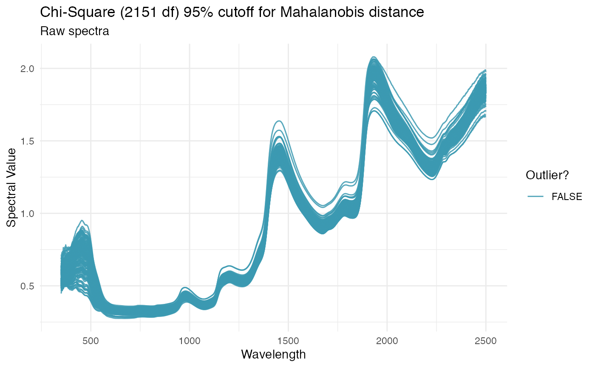

R/PlotSpectra.R
PlotSpectra.RdGenerates a ggplot object of given
spectra, with wavelength on the x axis and given spectral values on the y.
Mahalanobis distance is used to calculate outliers, which are both
identified on the plot. Rows from the original dataframe are printed to the
console for each outlier that is identified.
PlotSpectra( input.df, wavelengths, num.col.before.spectra = 1, window.size = 10, verbose = TRUE )
| input.df |
|
|---|---|
| wavelengths | List of wavelengths (numerical format) represented by each
spectral column in |
| num.col.before.spectra | Number of columns to the left of the spectral matrix (including unique ID). Default is 1. |
| window.size | number defining the size of window to use when calculating the covariance of the spectra (required to calculate Mahalanobis distance). Default is 10. |
| verbose | If |
If verbose, prints unique ID and metadata for rows identified as outliers. Returns plot of spectral data with non-outliers in blue and outliers in red. X-axis is wavelengths and y-axis is spectral values.
Jenna Hershberger jmh579@cornell.edu
# \donttest{ library(magrittr) ikeogu.2017 %>% dplyr::rename(unique.id = sample.id) %>% dplyr::select(unique.id, dplyr::everything(), -TCC) %>% na.omit() %>% PlotSpectra(input.df = ., wavelengths = 350:2500, num.col.before.spectra = 5, window.size = 15)#> No outliers detected.# }